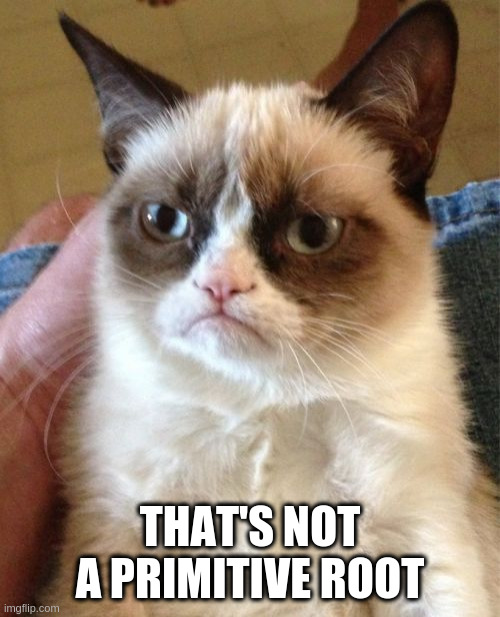

<template>
  <div class="container-fluid">
    <h1>Generator Cycle</h1>
    <p>This little program will cycle through the primitive roots of P, starting with G.</p>

    <div class="row">
      <div class="col form-group">
        <label for="generator">
          G
        </label>
        <input id='generator' type='text' class="form-control ${generatorInvalid ? 'is-invalid':''}" value.bind="generator" disabled.bind="begun" />
        <div show.bind='generatorInvalid' class='invalid-feedback'>This is not a valid, whole number greater than 1</div>
      </div>
      <div class="col">
        <label for='prime'>
          P
        </label>
        <input id='prime' type='text' class="form-control ${primeInvalid ? 'is-invalid':''}" value.bind="prime" disabled.bind="begun" />
        <div show.bind='primeInvalid' class='invalid-feedback'>This is not a valid, whole number greater than 1</div>

      </div>
    </div>
    <div class="row">
      <div class="col">
        <button type="button" class="btn btn-primary" click.delegate="start()" disabled.bind="begun">
          Start
        </button>
      </div>
      <div class="col"><label>roots</label><br/>${current == null ? '-' : current}</div>
      <div class="col"><label>cycle count</label><br/>${cycleCount}</div>
    </div>

    
  </div>
</template>
